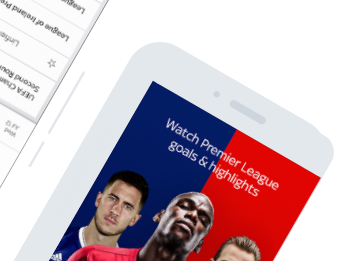
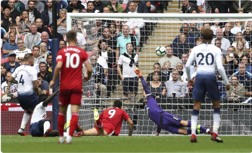

Get a personalized football experience tailored just for you
Achieve super-fan status by getting tailored updates and
up-to-the-minute information on your team.


00:28
00:42


Sat, 12:35pm
Friendly Match
Turn on all match notifications


The Guardian Live Scores app is your go to app for live scores and
watching Premier League goals… Get in there, what a result!
As well as videos of all the goals, you can watch match highlights,
check out the latest scores and results and stay bang-up-to-date with
the big football stories from The Guardian publication.
WHAT IT DOES
Learn more
The in-game goal clips from every Premier League match are available
to Guardian TV customers with a Guardian subscription.
So, if you’re not a subscriber, now’s the time to make that savvy
call. If that’s a step too far for you, you can still watch loads of
firecracker Premier League action as long as you sign in with a free
Guardian iD.
GET STARTED
Learn more
User-friendly Interface
Video highlights for every Premier League and English Football League
game

Notifications for your teams, including in-game goal clips and Premier
League match highlights for Sky TV subscribers with Guardian

Brand new video section including dedicated areas for your chosen team,
trending video, Premier League, Football league and other major leagues

Match pages showing live scores, commentary, team line-ups and enhanced
match stats to keep you up-to-date on all the action

The new picture in picture video mode means you can watch goals, manager
interviews and more whilst using other areas of the app – so you don’t
need to miss any of the action

Live updated league tables including all the domestic, European and
major leagues and tournaments

The Guardian News Vidiprinter. Follow the goals as they go in with our
new and improved Vidiprinter
Match reports, previews and a dedicated news section

And you can achieve super-fan status by personalising your home page
with up-to-the-minute information on your team.
 Features That Will Tailor Your Experience
Features That Will Tailor Your Experience
 What Our Users Say
What Our Users Say
Darren Wilson
Good for scores and commentary but the team lineups have stopped
working.
We have been featured in


Download on
play

Download on the
App Store
Get Up Close With Your Team
If you’re interested in the scores of more than one team (it’s OK, we
won’t tell your mates you support two clubs!), you can choose the
scores and competitions that matter to you using the ‘My Scores’
section. So, make sure you’re a top-flight football fan by downloading
the Football Score Centre now. It’s got all this:
Download
Support
Developers
Privacy
Download on
play
Download on the
App Store

Sports
Sports
TV